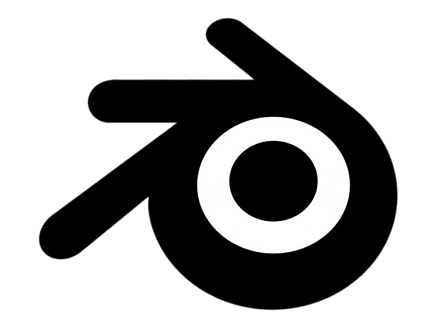
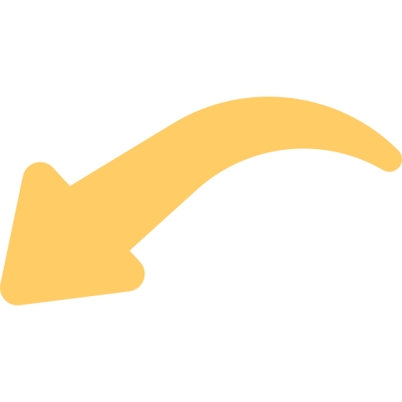
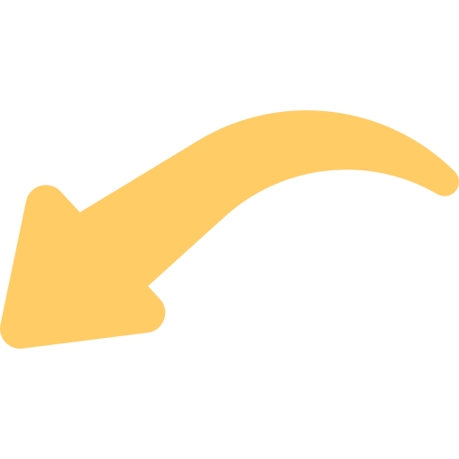

Blender Lab

Compañeros y docente, antes de comenzar, encontrarán una guía en la parte superior que explica la estructura y navegación del wireframe. En la parte inferior podrán acceder a la sustentación de los contenidos. Esta web es un wireframe interactivo diseñado para explorar cada sección de manera dinámica y comprender su funcionalidad.
 

Diseño y desarrollo por Jeffrey Bustamante
El wireframe diseñado aquí representa una página dinámica, donde la página principal (index) actúa como el núcleo de navegación del sitio educativo.
El enfoque utilizado ofrece varias ventajas:
El sitio web está construido dentro de un div principal con la clase container, que organiza el contenido en tres secciones principales:
Esta distribución permite una navegación equilibrada y organizada, destacando el proceso y resultado final del uso de Blender.
Contiene imágenes representativas de personajes modelados en Blender.
Incluye botones de navegación en forma de flechas (⬆ y ⬇) con funciones moveSidebarUp() y moveSidebarDown().
Se muestran modelos en proceso, destacando el modelado y texturización.
El núcleo del proyecto, con los siguientes elementos:
img src="brand.png".El diseño facilita la navegación desde la presentación hasta el acceso a cursos.
Muestra imágenes de productos terminados en Blender:
Incluye botones (⬆ y ⬇) para desplazarse entre las imágenes.
Al presionar "Entrar", se abre un modal con:
Esta introducción personaliza la experiencia antes de acceder a cursos.
Tras la confirmación, se accede a una nueva página con:
Diseño y desarrollo Wireframe por Jeffrey Bustamante